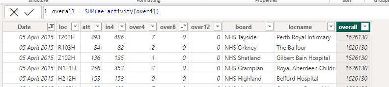
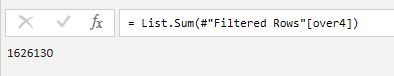
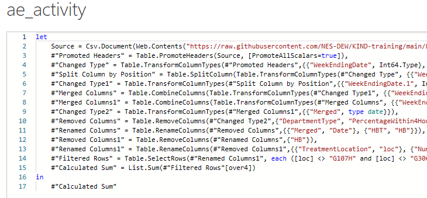
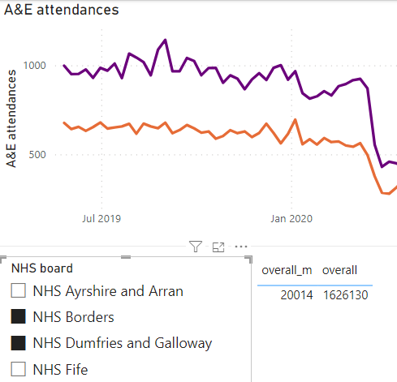
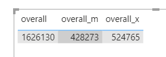
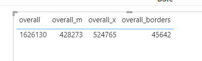

DAX vs PowerQuery M
Power BI
Power Query
beginner
Session materials
- all materials
- slides
html / pdf - sample files
.pbix / .xlsx
Previous attendees have said…
- 9 previous attendees have left feedback
- 100% would recommend this session to a colleague
- 100% said that this session was pitched correctly

Three random comments from previous attendees
- Still building my knowledge of power bi so this was both a useful refresher of material covered the the beginners pbi course along with new learning
- A good description, easy to understand and follow.
- I definitely learned a lot but found it difficult to practice at the same time as keeping up with the session, so am doing some now. Thanks Brendan.
Welcome
- 🌶 this session is for Power BI beginners
- you’ll need Power BI Desktop and this sample dashboard to follow along
Session outline
- about DAX and PQM
- DAX and PQM vs Excel formulas
- distinctive features
- query steps (PQM)
- filter context (DAX)
- applications and best practice
- feedback and resources
Setup
- Power BI desktop
- download and open this sample dashboard
- three datasets, brought in from the web with PowerQuery
- several calculated columns
About DAX and PQM
- found in Excel and Power BI (and in Microsoft’s SQL products)
- DAX (Data Analysis Expressions)
- Excel: PowerPivot
- Power BI: Measures and calculated columns
- PQM (Power Query M)
- Excel: PowerQuery and various
Get Datatools - PowerBI: various data loading tools and
Tranform data
- Excel: PowerQuery and various
Different applications
- DAX = summarising/analysing data
- PQM = loading/transforming data
DAX vs Excel
- there are plenty of apparent similarities with Excel
- broadly, functional approach
- similar/identical function names
- similar syntax in some places
- calculate a column
overall = SUM(ae_activity[over4])in DAX- like Excel, this sums the entire
over4column, rather than each row 
- like Excel, this sums the entire
PQM vs Excel
- PQ really looks like Excel
- familiar tools - renaming/removing columns, filtering
- evolved tools - like
Split Column
- PQM is much less like Excel formula language than DAX
Appearances mislead
- try adding another column to the Excel formula, and to the DAX
- e.g.
overall = SUM(ae_activity[over4], ae_activity[over12])) - ✔️ Excel is perfectly fine with this
- ❌ but DAX’s
SUMfunction falls over
- e.g.
- for PQM, totally different approach required to Excel
Input in DAX
- DAX takes structured references to columns and tables (no
A3)-
overall = SUM(ae_activity[over4])sums all the values in the over4 column -
table[column]- so this is theover4column in theae_activitytable
-
Input in PQM
- PQM works on query steps, with the #step name (and columns/tables) as input
-
= List.Sum(#"Filtered Rows"[over4])would sum all the values in the over4 column  - takes the
#Filtered Rowsquery step, and sums itsover4column - that new query step will be called
#Calculated Sum(but we could edit that)
-
- this is unusual, but gives PQM users a tweak-able history of their data transformation with undo/redo
- try looking at the advanced editor in PQM to see what PQM really looks like 
Filter context
- there is considerable overlap between DAX and PQM
- example: DAX’s calculated columns replicates functionality in PQM (and Excel)
- to show the DAX-specific part of the story, we’ll need to make a measure
- measures are responsive summaries of our data - when a user twiddles the dashboard, they’ll change
- or, measures respond to the filter context
Make a measure
- take your calculated column DAX and make a measure using exactly the same code
-
overall_m = SUM(ae_activity[over4])- same code as the calculated column
- different filter context
-
- then put
overallandoverall_minto a table, and play with the filters: 
More on the filter context
- different functions interpret the context differently:
SUMvsSUMX-
SUMXevaluates some expression for each row in the context:overall_x = SUMX(ae_activity, ae_activity[over4] + ae_activity[over8])
-
-
CALCULATEas a function specifically for fooling with the filter context in a more detailed way-
overall_borders = CALCULATE(SUM(ae_activity[over4]), ae_activity[board] = "NHS Borders")to restrict to just NHS Borders 
-
Applications and best practice
- there’s lots of overlap, and so you can work to suit your preferences
- e.g. not clear whether creating calculated columns is better in DAX or PQM
- DAX is great when:
- you need your data to respond to the user
- you need to create lots of calculated values
- PQM is great when:
- you need to transform/clean your data
- you need to repeatedly load some data
- you need to undo/redo
Resources
PQM: Microsoft’s function reference is useful, but their intro pages are confusing and hard to recommend